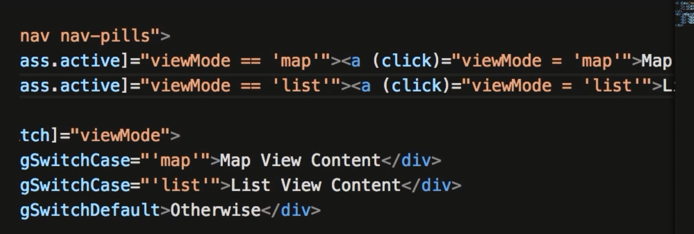
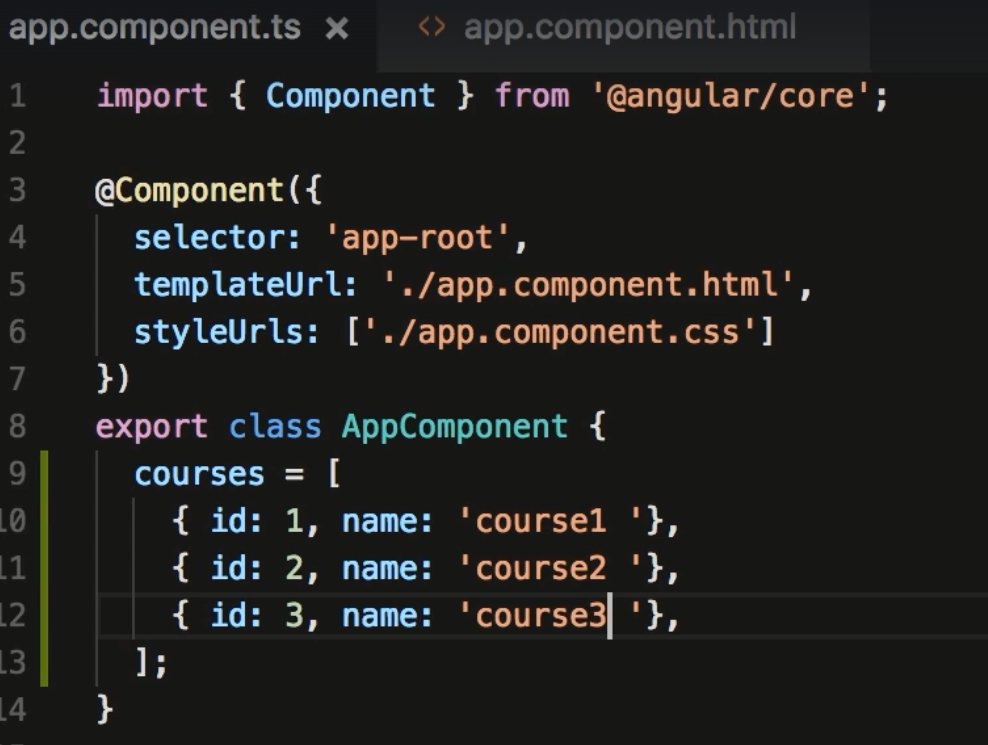
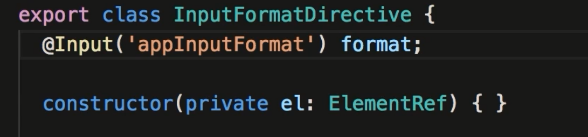

Section 6. Directives
64. ngIf
- Directives are used to modify the structure or attribute of a DOM
- In Angular 4 you can use ng-template as a way to display conditional content. Add a #variable and use this value in your *ngIf statement
65.Hidden Property
- Another method is to toggle the hidden property. The difference with these approaches is; using this approach adds the element to to dom but simply hides the content. Using ngIf, the items are not in the DOM. Generally use ngIf unless it takes a lot of processing to generate the hidden content.
66. ngSwitchCase
- Switchcase is a way to display content that isn't based on true or false. In the example below what's displayed is based on a text variable viewMode.
- viewMode is also used to toggle the button to active
- Note: first 2 images are the same file except shifted over to get all content.

67. ngFor
- Here is our typical ngFor directive except it uses the exported value index. In this example index is used to display value of the index with the letter i
- This example will have output similar to: 1 - Course 1

- To find out all exported values go to angular.io and search for Directive ngForOf. Here you can find all exported values
68. ngFor and Change Detection
- Angular has builtin change detection. If any action happens Angular will detect and render the change. These change events include DOM events, Ajax requests or Timers
- Below shows how to remove an item from an array.
69. ngFor and Trackby
- This topic has to do with performance. By default if a change occurs that involves a long list, if Angular detects a change it will re-render the entire list.
- Angular detects by default by there identity in memory. Add trackBy: to have angular track by another method.
- The example below adds the trackBy to our ngFor. It references a function that we create in the component.
- The 2nd image is our component, and the 3rd image is our tracking function
- I'm assuming that if Angular already sees this course id it won't redraw. Sounds like this needs some sort of index to make it work properly.
- There's some trickery here I don't understand.... use only with large performance draining lists.
70. The Leading Asterisk
- If you use the leading asterisk it tells angular to create tags with ng-template based on our expression
- For the most part just use the leading * and don't worry about creating the proper ng-template structure as shown below. Below is what angular does to re-render our code.
71. ngClass
- Is a different way to class bind. Below the example shows both methods, the 2nd method uses ngClass.
72. ngStyle
- Uses a similar technique as ngClass
73. Safe Traversal Operator
- Use this if you use something like interpolation but you may not have a value yet. If the value is currently null your browser is going to generate an error.
- Safe Traversal allows the tag to be generated without DOM errors. Use a ? .
74. Creating Custom Directives
- You can create custom directives by using the cli. type ng g d your-directive. It creates 2 files and updates the app.module.ts file.
- It adds this new directive to the declarations section. Take note of the new @angular/core imports.
- You can simplify the look of the code by modifying the property binding to as follows: Can only do if you have just 1 element.

Assignment ZippyComponent
- file: zippy.component.ts
- file: zippy.component.html
- file: zippy.component.css
- file: app.component.html
- What the app looks like in the browser.